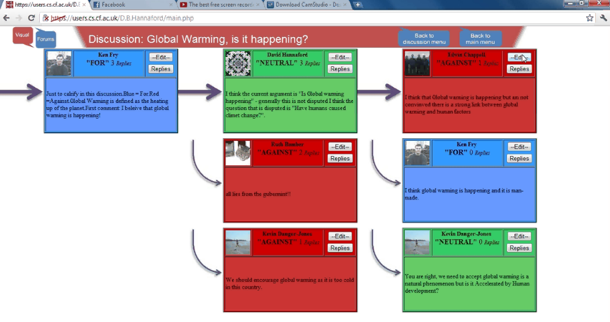
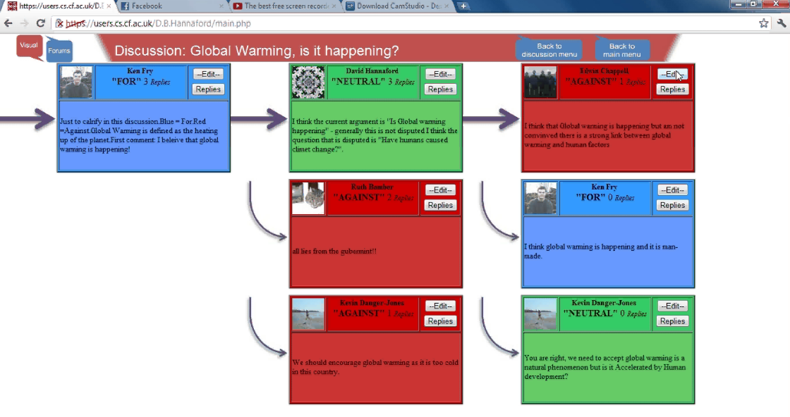

David Hannaford Net
David Hannaford's CV, Portfolio and InfoI am a web developer with Over 3 years experience with a Distinction in MSc Computing, I am particularly interested in client side technologies HTML4/5, CSS & all things JS and usually work in MS Visual Studio and SQL Server. I am a UK citizen and a car owner with a full driving license.
Zetica RASC DC
A client that specialised in surveying of Railway lines required a software control system to connect a number of different sensors (such as GPS, cameras and 3D radar). The software was primarily for the collection, organisation and management of the data related to the location along a particular length of track it was gathered, this data was then uploaded to global server.
My involvement in this project was the implementation of the user interface for this system, which for the purposes of displaying on multiple screens was done using web technologies such as HTML, CSS and Javascript connecting to a server using Signal-R websockets. Although the higher level wireframes were not designed by me, I choose all the details of the Software design and choose to use Object oriented JS, Jquery UI and a custom theme, along with Kendo UI for the plotting of Charts.
{kind=link}
{kind=link}
{kind=link}

{kind=link}
{kind=link}
IMS Alumni Drupal Site
Another client in the Healthcare Industry wanted to created a website that would keep track of former employees and the sharing of exclusive content. It was decided that the website would be implemented using the Drupal Content Management System which would include such features as ability to make content and members searchable and for Administrators to easily upload and manage content to be displayed.
My Involvement with the project was to implement the design using a Drupal style theme that was created using a third party designer, although eventually all modifications of styles where done by myself. I had to administer and develop the Drupal site, this was done using a number of custom modules as well as modifying Drupal templates which required an understanding of PHP and the Drupal API. The website was successfully deployed and the client later asked for a more sophisticated archiving system to be added based on the quality of the initial work.
{kind=link}
{kind=link}
{kind=link}

{kind=link}
{kind=link}
OCC Marketplace
A long running product that was produced by the Company for the searching of information related to the provision of social services for Local Authority clients. Technologies used included Microsoft technologies, C#, MVC 3 and SQL stored procedures for data access, with a web interface using HTML, CSS and JS.
My Involvement was diverse with improvements to the project included fixing the then defective WYSIWYG editor, implementation of Print and Responsive style sheets and modification of various Stored procedures and back end issues.
{kind=link}

Cupid Telemedicine
An EU project for the creation of a telemedicine system for Parkinson sufferers the idea being that users would perform therapeutic exercises with instructions uploaded specified by Clinicians. Users would have Bluetooth sensors attached to them that feedback from the exercises which can be provided to the clinicians and hence progress can be tracked. OCC was one of the many parties involved in the project involved with the management and collection of data using a C# MVC 4 on the back end with Web front end.
My involvement was in the extension of the system initially implmented by a colegue to integrate new features.
{kind=link}
Lab Health and Safety Tracking System
Cardiff University Engineering Department needed to keep track of whether various Laboratories in the Engineering department were properly audited, the lab technician responsible for the audits and when these audits where to be carried out. This involved integrating with the current system and database that was implemented in ASP Classic and SQL Server DBs.
I implemented the system using web based technologies in conjunction with the academics in charge of the overseeing off the system, improvements were made in an incremental manner.


{kind=link}
{kind=link}
{kind=link}
MSc Dissertation 'Visual Forums'
My novel idea for an on-line forum that took inspiration from mind mapping software, each comment by a user is a speech bubble with replies to the comment linked by arrows. It is possible to expand/minimise the to each comment which is more clearly displayed than a traditional forum where the screen can become cluttered to show this same thing. My Supervisor liked the idea and thought that it would be a good addition to his Social Science cross disciplinary research group and on the strength of my work I was offered an RA position.
The application used JS and AJAX to update from a server running PHP and MySQL database. The application allowed the user to log in with Facebook so I had some exposure to the Facebook Javascript and PHP API.

 

{kind=link}
{kind=link}
{kind=link}
- Email : hannaford71083@gmail.com
- Phone : 07841 580 578
- Address : 3 Fairfax Gardens, Church Road, Alphington, Exeter, EX2 8SR
- LinkedIn : www.linkedin.com/profile/view?id=112555716